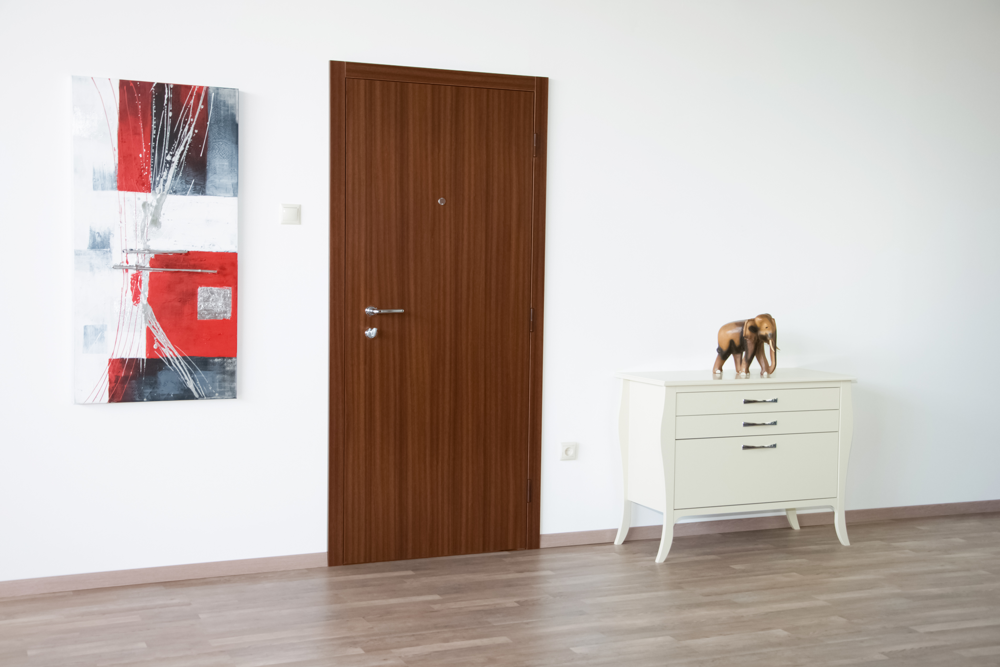
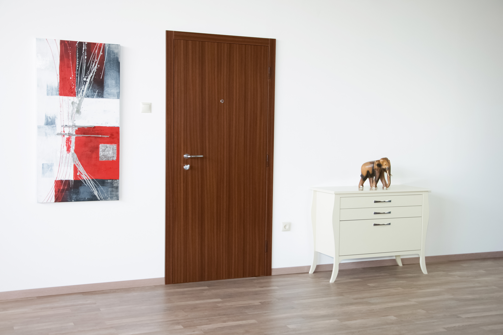

Protivlomna vrata VLOM so zaključena z laminatnimi ploščami vrhunske kvalitete Avstriskega podjetja Kaindl.
Preverite njihovo spletno stran za ogled celotne ponudbe barv in tekstur naših vrat.
 



IZBERITE BARVO VAŠIH VRAT
Prikazanih je le 6 najpopularnejših barv. Če imate v mislih nekaj posebnega ali želite pregledati celotno ponudbo se obrnite na spletno stran podjetja Kaindl.